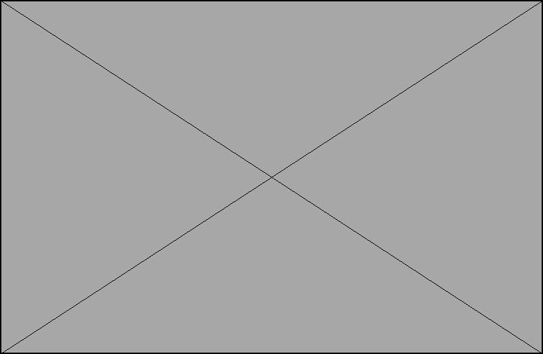

Immersive Touch

A closed-loop rehabilitation wearable for Complex Regional Pain Syndrome that turns desensitization into AR/VR play.

A closed-loop rehabilitation wearable for Complex Regional Pain Syndrome that turns desensitization into AR/VR play.

Triton2Go Redesign turns UCSD’s mobile ordering app into a campus food decision assistant. Discover surfaces trending and seasonal picks, a wait-time map shows what’s realistic between classes, and 2Go Bot uses your schedule, location and Dining Dollars balance to recommend meals that will be ready on time, while every path leads to one simple checkout.

CognitiveWheel is a desktop app and tangible device that helps you notice, name and act on your mental state mid-task. With one click, you pick how you feel: drifting, stuck, overwhelmed, anxious or bored. The app then works with AI agents to respond with the right next step, like breaking a task down, re-planning your work block, or a quick reset. Through ambient light, sound and a single button, the device keeps you on track without adding another screen notification, turning stuck moments into progress.
The core loop:
To be continued...